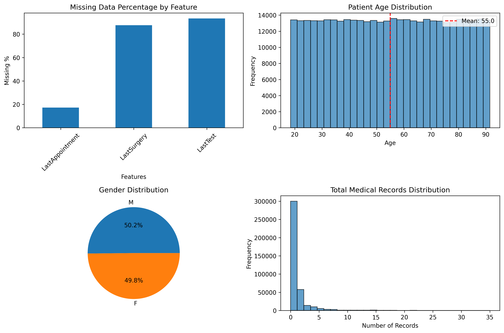
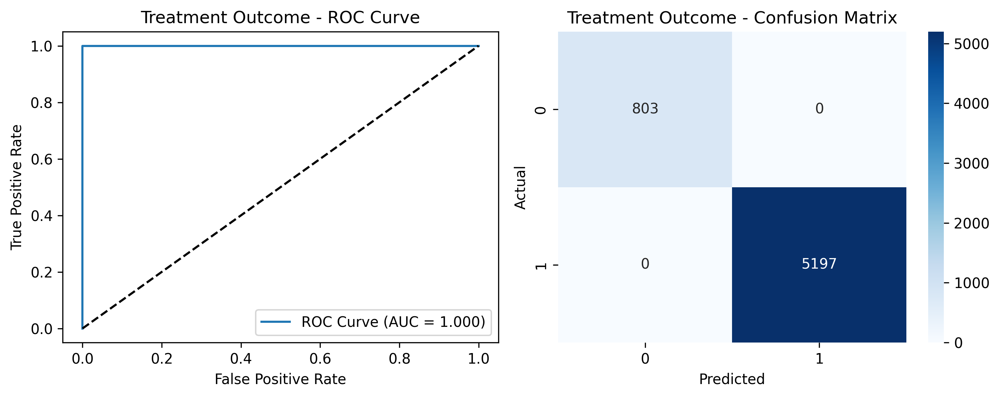
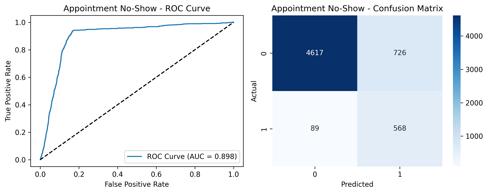
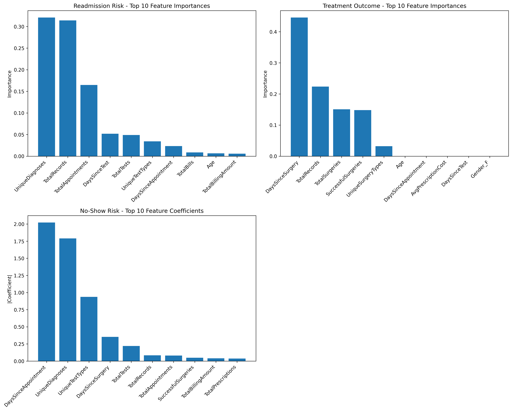
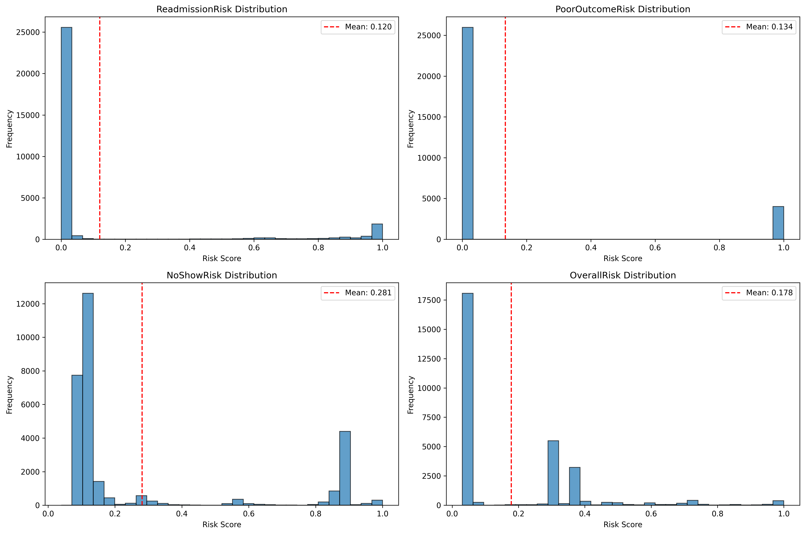
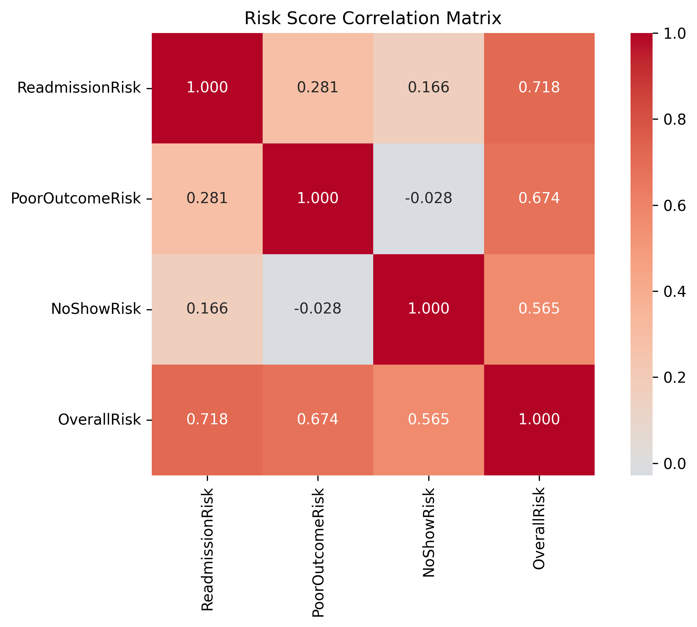
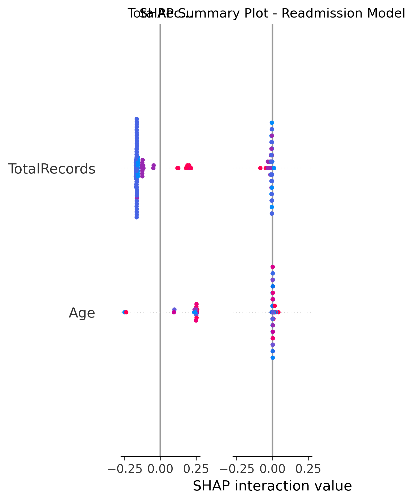
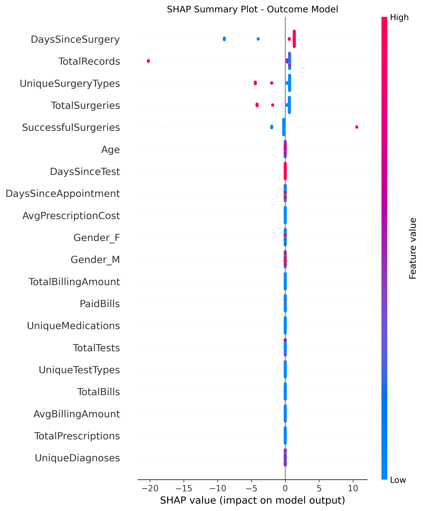
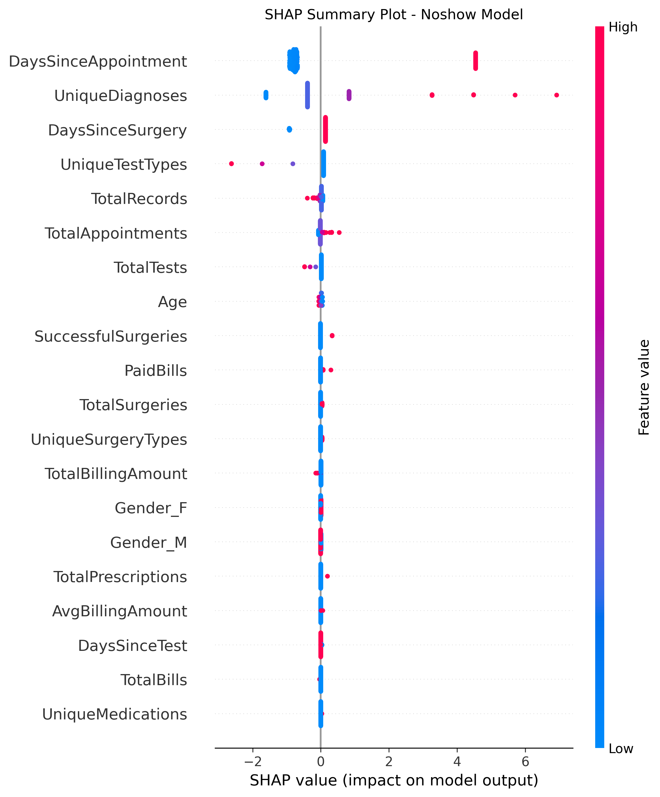

Advanced Machine Learning Analysis for Healthcare Risk Management
Generated: 2025-08-07 14:11:20
This comprehensive report presents the results of advanced predictive modeling analysis for patient risk assessment across three critical healthcare areas: readmission risk, treatment outcomes, and appointment adherence. The analysis employs state-of-the-art machine learning techniques including Random Forest, Gradient Boosting, and Logistic Regression with hyperparameter optimization.
Algorithm: Random Forest with balanced class weights and hyperparameter optimization
AUC Score: 0.992
Cross-Validation: 0.991 ± 0.003
Interpretation: Excellent predictive performance
Algorithm: Gradient Boosting with adaptive learning rate and depth optimization
AUC Score: 1.000
Cross-Validation: 1.000 ± 0.000
Interpretation: Excellent predictive performance
Algorithm: Regularized Logistic Regression with L1/L2 penalty optimization
AUC Score: 0.898
Cross-Validation: 0.897 ± 0.004
Interpretation: Excellent predictive performance
| Risk Category | Mean Score | Standard Deviation | High Risk (>0.7) | Medium Risk (0.4-0.7) | Low Risk (<0.4) |
|---|---|---|---|---|---|
| 🔄 Readmission Risk | 0.120 | 0.295 | 3085 | 714 | 26201 |
| 🎯 Poor Outcome Risk | 0.134 | 0.341 | 4017 | 0 | 25983 |
| 📅 No-Show Risk | 0.281 | 0.308 | 5958 | 682 | 23360 |
| 📊 Overall Risk | 0.178 | 0.205 | 1205 | 1054 | 27741 |
Overview of data completeness, distributions, and basic statistics.
        ROC curves and confusion matrices for all three predictive models.
Identification of the most influential features for each prediction model.
Advanced model interpretability showing how individual features contribute to predictions.
Distribution patterns and correlations between different risk types.
Report Generated by NHS Predictive Analytics System
For technical questions or model updates, contact the Data Science Team
This analysis is for clinical decision support and should be used in conjunction with professional medical judgment